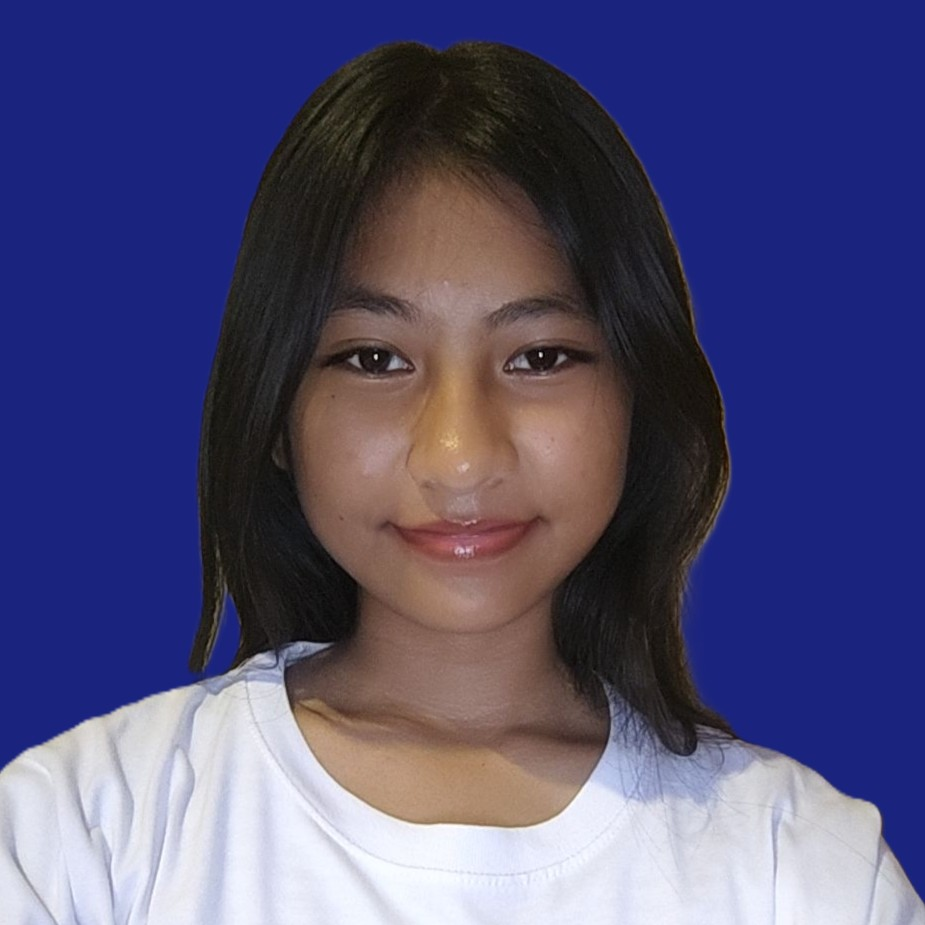

About Me
Hello! My name is Ricagen A. Genita, the founder of ARAL. I am a student who believes that education is the most powerful tool for change. My journey started with small acts—helping classmates with lessons and raising awareness about the struggles of learners in rural communities.
At first, it was just me. But later, others who shared the same passion joined. Now, ARAL has grown into a youth-led advocacy group that works together to make sure no learner is left behind.